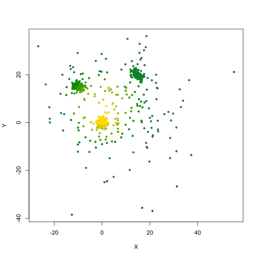

Computes the depth values with respect to the distribution provided in data
of either all the coordinates given in u, or all observations from data
if u is not provided. Depth computations rely on the packages
depth and
ddalpha.
depth_values(data, u = NULL, method = "Projection", warnings = FALSE)
Arguments
| data | Matrix of numerical values containing the observations (one per row, with two columns for X and Y coordinates) |
|---|---|
| u | Matrix of numerical values containing the coordinates for which
depth values are to be computed (in rows, with two columns for X and Y
coordinates). When missing or NULL, depth values will be computed for all
observations from |
| method | Depth function used. Valid options are "L2", "Lui", "Mahalanobis", "Oja", "Projection" (default), "Spatial", "Tukey" |
| warnings | Logical value, to display the warnings and error raised by the underlying depth functions |
Value
Array of numerical values containing the depth of each observation
from data, or from u if provided (these values are all set to 0 in the
occurrence of errors)
See also
Examples
# Illustrative data XY <- rbind( mvtnorm::rmvnorm(300, c(0, 0), diag(2)), mvtnorm::rmvnorm(100, c(15, 20), diag(2) * 3 - 1), mvtnorm::rmvnorm(150, c(-10, 15), diag(2) * 2 - 0.5), mvtnorm::rmvnorm(200, c(5, 5), diag(2) * 200) ) # Compute depths D <- depth_values(XY, method = "L2", warnings = TRUE) # Plot distribution with depth color scale plotColors <- colorRampPalette(c("maroon4", "steelblue4", "green4", "gold"))(20) plot(XY, pch = 20, asp = 1, col = plotColors[as.numeric(cut(D, breaks = 20))], xlab = "X", ylab = "Y")# Plot depth values plot(1:nrow(XY), D, pch = 20, col = plotColors[as.numeric(cut(D, breaks = 20))], xlab = "Index", ylab = "Depth")#> [1] 0.3940824# Compute depth for three sets of coordinates depth_values(XY, rbind(c(10, 3), c(65, 8), c(0, 1)), method = "L2")#> [1] 0.3940824 0.1395141 0.4590793